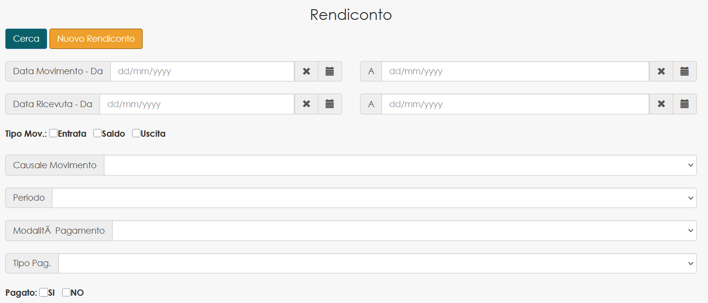
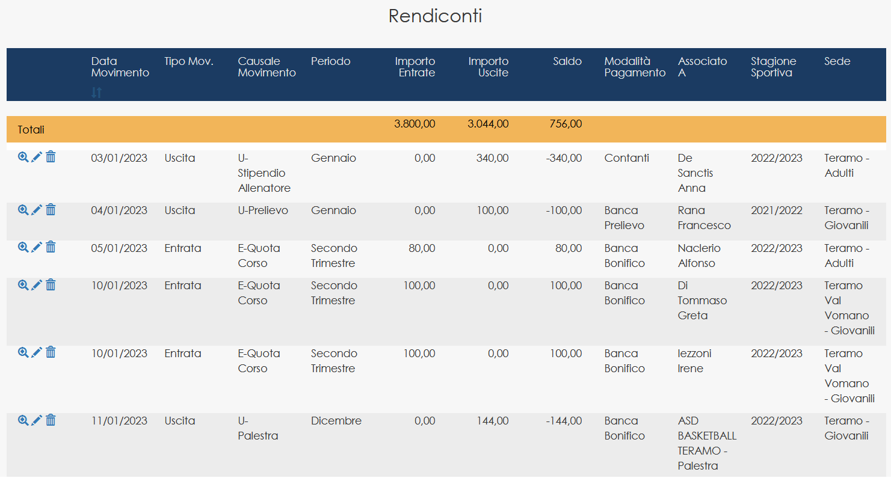
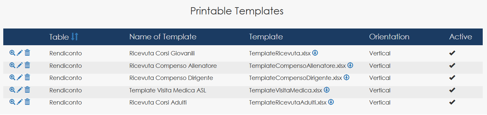

Volleyball Club Management System — Progressive Generativity
Context
Management system for a volleyball club supporting administrative operations, athlete tracking and financial management. The system was progressively developed and maintained by a sports administrator with no prior programming background, illustrating how domain experts can progressively become system modelers using the MySirt DSL.
- Athletes and teams management
- Coaches and staff
- Medical certificates tracking
- Fiscal receipts generation
- Administrative workflow
Learning Progression
The system was initially configured using the visual modeling tools. After a short onboarding period, the domain expert progressively moved to direct editing of the DSL and became able to maintain the operational system.
Visual configuration using MySirt forms and entity builders.
Assisted editing of the DSL for business rules and structural adjustments.
Independent DSL maintenance of the operational system.

Search interface automatically generated from the domain model with domain-specific filtering parameters.
Structural Footprint
Structural scope of the generated system defined through the MySirt DSL.
Generative Evidence
Quantitative comparison between the DSL definition and the generated runtime system.
The operational system was generated entirely from the DSL definition, representing a model instance of the execution meta-model. The domain expert maintained the system exclusively by editing the DSL without modifying the generated runtime code.
This demonstrates the progressive transition of a domain expert from configuration to full DSL-based system modeling.

Operational dashboard displaying financial movements generated from the domain model, including calculated balances and cross-entity references.
Operational Evidence
- Operational usage for over two years
- Used for real administrative management of the club
- System generated and maintained through DSL definitions
- Domain expert progressively moved from forms configuration to direct DSL editing
Engine Evolution
Operational usage led to improvements in the printing subsystem and refinements of the Execution Engine driven by domain feedback.

Multiple document templates can be associated with the same domain entity, enabling different generated outputs.
Architectural Significance
This case demonstrates:
- Progressive learning curve for domain experts
- Transferability of the modeling language
- Capability to encode operational business logic
- Real-world feedback driving engine evolution
Key Point
A domain expert, after minimal onboarding, generated and maintained a full operational system without modifying the generated code, by operating directly on the model definition..